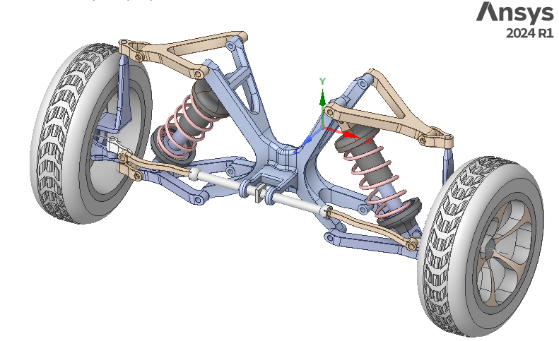
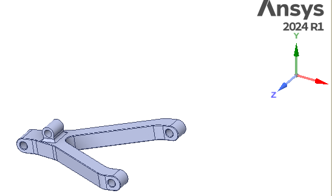
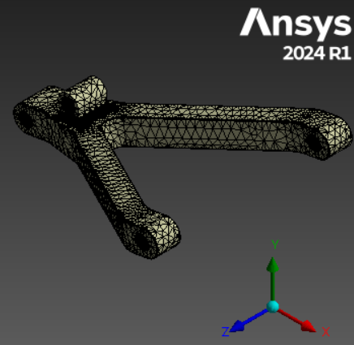
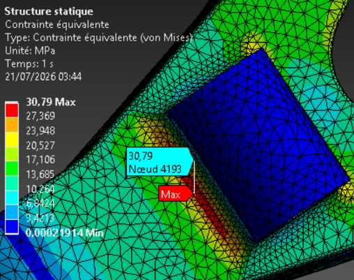
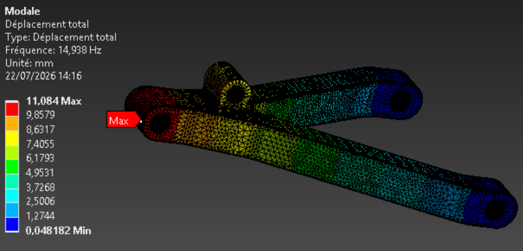
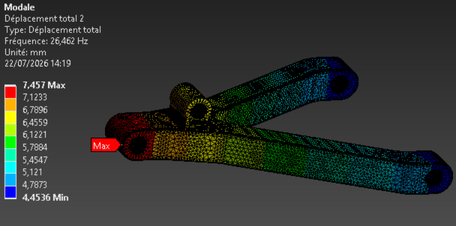
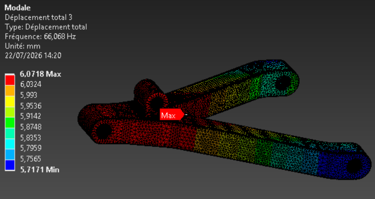

Étude structurelle d'un bras de suspension inférieur isolé de son assemblage : géométrie réelle extraite de la CAO, chaîne de chargement reconstituée par équilibre mécanique, conditions aux limites représentatives (bushing, rotule). Statique · Modale · Harmonique.
Le bras inférieur est isolé du reste de la suspension (bras supérieur, fusée, jante non modélisés). Chaque liaison retirée du modèle est remplacée par une condition aux limites équivalente — c'est cette démarche de simplification représentative, plus que le clic « Solve », qui est documentée ici : d'où vient chaque effort, comment il se répartit, et pourquoi telle liaison plutôt qu'un encastrement.

Contrairement à un composant vélo (ISO 4210-6, norme publique), il n'existe pas de norme publique unique pour les essais de fatigue d'un bras de suspension automobile — chaque constructeur applique ses propres spécifications internes (cahier des charges CDCF, non publiées). Le cas de charge retenu ici (3g vertical, coefficient d'adhérence μ=1 pour freinage/virage) suit une méthodologie de pré-dimensionnement couramment publiée dans la littérature technique automobile (SAE, ouvrages de référence en dynamique du véhicule), pas une norme opposable — hypothèse à documenter explicitement plutôt qu'à citer comme une conformité réglementaire.
Coordonnées extraites directement de la CAO (centroïdes des faces cylindriques). Repère véhicule : X transverse, Y vertical, Z longitudinal — unités en mm.
| Point | X (transverse) | Y (vertical) | Z (longitudinal) |
|---|---|---|---|
| Silentbloc avant | −214,74 | −40,342 | 942,56 |
| Silentbloc arrière | −214,74 | −40,342 | 522,30 |
| Point d'ancrage ressort | −598,92 | −44,964 | 732,43 |
| Rotule inférieure | −699,88 | −122,86 | 732,03 |
| Rotule supérieure (réf.) | −690,56 | 622,26 | 732,43 |
| Centre roue (réf.) | −970,36 | 34,628 | 737,36 |
Silentblocs avant/arrière partageant X et Y → l'axe de pivot du bras est parallèle à Z (longitudinal), cohérent avec un débattement vertical de suspension.

Trois équilibres successifs, du contact roue jusqu'à la pièce étudiée. Cas retenu : choc vertical 3g, roue avant (450 kg/roue).
Poids par roue amplifié par le facteur de choc dynamique (nid‑de‑poule, cas normatif 3g).
La fusée reprend Fz entre les deux rotules ; répartition selon les hauteurs réelles mesurées par rapport au centre roue.
Le bras pivote autour de l'axe silentblocs ; le ressort équilibre le moment créé par la rotule. Les deux forces sont géométriquement du même côté du pivot mais de sens vertical opposé — sans quoi rien ne s'opposerait à la rotation du bras (voir section Nuances).
Seul le cas 3g vertical est traité ici. Le freinage (μ=1) et le virage à la limite d'adhérence restent à calculer pour obtenir le cas combiné réellement dimensionnant.
Chaque liaison retirée est remplacée par la condition la plus représentative de son comportement réel — jamais un encastrement pur, qui rigidifierait artificiellement la pièce.
6 DDL liés par raideur (3 translations + 3 rotations), issues de la littérature (brevets automobile). Seuls points réellement fixes de la pièce.
3 forces, aucun moment transmis (comportement réel d'une rotule). Substitue la fusée non modélisée. Distribution en cosinus sur le demi‑cylindre en contact plutôt qu'une répartition rigide sur tout le trou (voir Nuances).
Force selon l'axe réel du ressort/amortisseur. Substitue l'ensemble ressort‑amortisseur non modélisé. Sens opposé à la rotule : le ressort comprimé repousse le bras.
Somme des réactions aux bushings (Joint Probe) comparée à la somme des efforts appliqués (rotule + ressort).
Structure prête, calcul à exécuter sous Ansys Mechanical. Cette section sera complétée avec cartographies de contrainte, déplacement, modes propres et fonction de transfert.
Avant d'exploiter un résultat de contrainte, il faut vérifier qu'il ne dépend plus de la finesse du maillage. Méthode : raffiner successivement (global ou local aux zones de concentration — congés, trous), relever la contrainte max à chaque étape, et retenir le maillage à partir duquel l'écart entre deux raffinements successifs devient négligeable (typiquement < 5%).
| Itération | Taille de maille (mm) | Nb éléments | Contrainte max (MPa) | Écart vs précédent |
|---|---|---|---|---|
| 1 — grossier (global 17) | 8 | — | 29,4 | — |
| 2 | 6 | — | 29,7 | +1,0 % |
| 3 | 4 | — | 30,1 | +1,3 % |
| 4 — fin (retenu) | 3 | 77 494 | 30,17 | +0,2 % |
Convergence régulière et monotone (29,4 → 29,7 → 30,1 → 30,17 MPa), écarts systématiquement sous le seuil de 5% dès 6 mm — contrainte max retenue ≈ 30,17 MPa (maillage 3 mm).

| Métrique | Min | Max | Moyenne | Écart-type |
|---|---|---|---|---|
| Inclinaison (Skewness) | 0,0013 | 0,996 | 0,452 | 0,195 |
| Jacobien (points de Gauss) | 0,341 | 1,0 | 0,982 | 0,041 |
| Ratio de forme | 1,18 | 22,5 | 2,39 | 0,810 |
Von Mises, coefficient de sécurité, convergence de maillage.

6 premiers modes, participation modale validée croisée avec les raideurs statiques.
| Mode | Fréq (Hz) | Type |
|---|---|---|
| 1 | 14,94 | Torsion pivot (Rot. Z) |
| 2 | 26,46 | Translation axiale (Dir. Z) |
| 3 | 66,07 | Flexion transversale (Dir. X / Rot. Y) |
| 4 | 82,62 | Résiduel |
| 5 | 108,94 | Résiduel |
| 6 | 127,11 | Résiduel |



Fonction de transfert, facteur d'amplification, risque de résonance.
| Mode | Fréq (Hz) | Fraction masse effective dominante | Raideur associée |
|---|---|---|---|
| 1 | 14,94 | Rotation Z : 0 → 0,950 · Dir. Y : 0 → 0,715 | Krz (torsion pivot — la plus souple) |
| 2 | 26,46 | Dir. Z : 0 → 0,968 | Kz (axiale) |
| 3 | 66,07 | Dir. X : 0,02 → 0,99 · Rot. Y : 0,31 → 0,98 | Kx / Krx‑Kry (radiale/flexion) |
Deux points de mesure cohérents : ≈ 24 MPa au nœud de référence (test de linéarité) et 30,79 MPa au maximum global hors zones de liaison (valeur retenue, maillage 3mm amélioré). Les deux restent loin de la limite élastique de l'acier — coefficient de sécurité confortable. Ça ne veut pas dire que la pièce est surdimensionnée par erreur : un bras de suspension est souvent limité par la rigidité en service (tenue de route) ou la fatigue (limite d'endurance 2 à 3× plus basse que la limite élastique statique), pas par la résistance statique seule. La matière qu'il faut pour rester rigide ou pour tenir des millions de cycles dépasse souvent celle qui suffirait juste à ne pas casser sous un seul cas de charge extrême.
Statique + modale + harmonique — Ansys
Statique + modale + sous-structuration — Abaqus
Cette annexe documente les difficultés rencontrées pendant la construction du modèle (convergence, orientation des repères, choix de conditions aux limites) et comment elles ont été résolues. Les sections précédentes présentent la démarche et les résultats retenus ; celle‑ci trace le raisonnement qui a permis d'y arriver — utile pour juger la fiabilité du modèle, pas nécessaire pour lire les résultats.
Chaque choix de modélisation a une contrepartie physique. Cette section documente les points où une simplification naïve introduirait une erreur, et pourquoi le choix retenu est plus représentatif.
Rotule et point ressort sont géométriquement du même côté du pivot — on pourrait croire que leurs forces s'additionnent. En réalité elles sont de sens vertical opposé : la roue pousse le bras vers le haut à la rotule, le ressort comprimé le repousse vers le bas à son point d'ancrage (principe action‑réaction). Sans cette opposition, rien n'équilibrerait la rotation du bras autour du pivot — la suspension ne pourrait pas fonctionner.
Le tableau de raideur d'un joint Bushing est une matrice 6×6 symétrique (translations X/Y/Z, rotations θX/θY/θZ) — Ansys ne fait saisir que le triangle inférieur, le reste est dupliqué automatiquement. Pour un silentbloc isotrope classique, seule la diagonale est renseignée ; les termes de couplage hors diagonale restent nuls. L'axe du silentbloc étant confondu avec l'axe de pivot (Z global), les raideurs radiales sont X/Y et l'axiale est Z.
Ansys grise les cellules de raideur en rotation quand l'unité active du projet est le degré (la matrice de raideur en rotation n'est éditable qu'en radians). Il faut basculer l'unité d'angle sur Radians dans la barre d'état, puis convertir les valeurs.
Le châssis n'étant pas modélisé, le joint se définit en Corps‑Sol (Body‑Ground) : seul le corps mobile (la face du bras) est renseigné, l'autre extrémité étant un repère fixe implicite. Le mode Corps‑Corps (Body‑Body) ne s'impose que si le châssis est réellement présent dans le modèle.
Un Remote Point en mode Rigid impose la même transformation à tous les nœuds de la face cylindrique — y compris la moitié du trou opposée à la direction de la charge, qui se retrouve « tirée » de façon non physique. Or un trou avec un axe simple ne transmet que de la compression, jamais de traction.
Silentblocs : le manchon est collé/monté serré → contact sur toute la circonférence → Rigid reste représentatif.
Rotule et point ressort : contact simple axe/trou → utiliser Bearing Load plutôt qu'une Remote Force classique, pour une distribution en cosinus limitée au demi‑cylindre en contact.
Message « insufficient constraints to prevent rigid body motion » : le modèle peut encore bouger sans se déformer dans au moins une direction — le solveur ne trouve pas de solution stable. Un temps de calcul anormalement long (le solveur qui « tourne » sans converger) est souvent le premier symptôme, avant même le message d'erreur explicite.
Point de vigilance spécifique à une pièce tenue par 2 bushings alignés sur le même axe (ici Z, l'axe de pivot) : les raideurs en translation (Kx, Ky, Kz) ne s'opposent à aucune rotation du bras autour de cet axe — les 2 points restent immobiles pendant cette rotation, ils ne « voient » rien. Seule la raideur en torsion (Krz) peut empêcher ce mouvement. Une charge (Bearing Load / Remote Force) n'est jamais une contrainte : elle ne bloque aucun déplacement, seul un joint ou un support le peut.
Toute application idéalisée d'une liaison (Joint Bushing, Bearing Load, et surtout un Fixed Support) crée une concentration de contrainte artificielle localement, autour de la zone concernée — ce n'est pas un défaut réel de la pièce, mais un effet de la simplification de modélisation elle‑même. C'est le principe de Saint‑Venant : au‑delà d'une distance de l'ordre de la dimension caractéristique de la zone chargée (≈ 1 à 2 fois le diamètre du trou), la contrainte redevient représentative du comportement réel.
Un Fixed Support est le cas le plus sévère : en bloquant totalement les 6 DDL sans aucune souplesse, il concentre la contrainte de façon encore plus artificielle qu'un Bushing (qui laisse un peu de liberté élastique). C'est une raison supplémentaire, en plus de celles déjà vues, de s'en méfier : même utilisé ponctuellement pour un test de convergence, la contrainte relevée juste à son voisinage ne doit jamais être retenue comme résultat final.